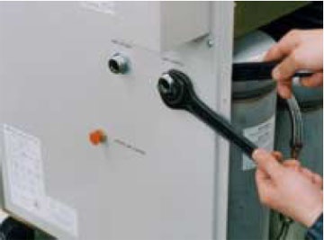
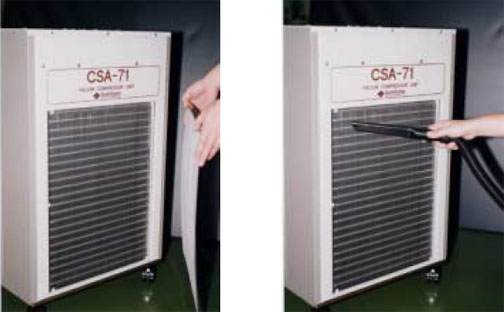
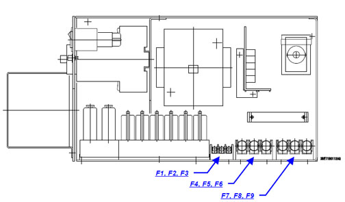

Operating Documentation
Direction 5133315-3, Rev# 14
Module Version 3.0, Version Date 6/10/09
Operating Documentation |
| ||||
| Adsorber must be replaced after 13,000 hours of compressor run time. | ||||
Check the compressor hour meter on front of the compressor.
Review the records to verify the adsorber was replaced on schedule.
If the adsorber is not scheduled for replacement, go to Step 5, or
If the adsorber should be replaced, order a replacement adsorber (2172241) and schedule an immediate adsorber replacement.
Calculate when the next replacement is due. (Replace after 13,000 hours.)
Record the calculated adsorber replacement date on the Site Log and on your schedule. Mark the next replacement due date on an external tag on the compressor.
Connect Lakeshore Diode Temperature Current Source Meter (46-317543G1) to the cable connected to the coldhead diode port. (Plug is located on coldhead mounting sleeve.)
Temperature should read:
Record the First Stage and Second Stage shield temperatures
on Magnet PM Report and on the Cryostat Performance Log:  in the Site Log Book.
in the Site Log Book.
If the shield temperature is out of spec, the helium boil-off, cryostat pressure and F1 and F2 flow rates can all increase. To find the cause of temperature increase, check the following:
Check and record the compressor dynamic pressure. (Pressure should be between 2.1 and 2.3 mPa.)
Turn the compressor OFF, and allow the static gas pressure to equalize on the supply gauge located on front of compressor.
Record the equalized pressure on the PM Report and in the Cryostat
Performance Log:  in Site Log Book. Pressure should
be 217 ±3 psig at 70°F (21°C). If the pressure is not
as specified, refer to the HC-10 Helium Compressor Operating
Manual.
in Site Log Book. Pressure should
be 217 ±3 psig at 70°F (21°C). If the pressure is not
as specified, refer to the HC-10 Helium Compressor Operating
Manual.
| ||||
| Adsorber must be replaced after 20,000 hours of compressor run time. | ||||
Check the compressor hour meter on front of compressor.
Review the records to verify the adsorber was replaced on schedule.
If the adsorber is not scheduled for replacement, go to Step 5, or
If the adsorber should be replaced, order a replacement adsorber (2172241) and schedule an immediate adsorber replacement. (Refer to Replacement of Sumitomo CSW-71 Adsorber for the adsorber replacement procedure).
Calculate when the next replacement is due. (Replace after 20,000 hours.)
Record the calculated adsorber replacement date on the Site Log and on your schedule. Mark the next replacement due date on an external tag on the compressor, and indicate the replacement adsorber part number, 2172241.
Connect the laptop to the magnet monitor per direction 2236995 (SIGNA HORIZON LCC Magnet Monitor Proactive Software GE Exclusive Use Only Installation and Troubleshooting Manual) for a SHeM or Direction 5212670 (Magnet Monitor 3 Installation and Service) for a Magnet Monitor 3.
Use the graphing function to plot the magnet vessel pressure for several hours. Verify that vessel pressure is cycling between 3.9 psi and 4.1 psi.
Select HDC (Heater Duty Cycle). Plot the duty cycle for the maximum number of days.
If the HDC is decreasing or near zero, check the following:
Shield temperature should read 35 to 42 K.
RUO temperatures.
Use the graphing function to plot the helium level for the maximum number of days permitted. Verify a consistent helium level. If the helium level is decreasing, there may be a leak in the magnet. Perform leak troubleshooting as documented in the LCC Magnet Manual, Direction 2192624.
Use the graphing function to plot the water temp and water flow for the maximum number of days. Verify that the water temp and flow to the compressor is consistent. Report any abnormalities to the site Maintenance staff.
Use the table function to view the last few months of data for CDC (Compressor Duty Cycle). Verify that the compressor was on for >95% of the time and within the manufacturer's requirements. Report any abnormalities to the site Maintenance staff.
Check and record the compressor dynamic pressure. (Pressure should be between 2.1 and 2.3 mPa.)
Turn the compressor OFF, and allow the static gas pressure to equalize on the supply gauge located on the front of the compressor.
Record the equalized pressure on the PM Report and in the Cryostat Performance Log (Table 10-1) in the Site Log Book. (Pressure should be 236 ±3 psig at 70°F (21°C). If pressure is not as specified, refer to the CSW-71 Compressor Operating Manual.)
| ||||
| Electrical shock hazard! | ||||
| performing maintenance while compressor is connected to an electrical power source | ||||
| Disconnect the compressor unit from power source before performing any maintenance procedure to avoid electrical shock |
| ||||
| The Oil Mist Adsorber must be replaced every 20,000 hours of operation. | ||||
Calculate when the next replacement is due.
Shutdown the Cryocooler.
Disconnect the Input Power Cable from the Compressor Unit.
Disconnect the Supply and Return Flex Lines from the Compressor Unit.
Loosen the screws that hold the Compressor Side Panel and remove the side panel. (See Illustration 1.)
| ||||
| The Aeroquip fittings will usually bleed off 3 bars (45 psi) of helium gas pressure each time the lines are disconnected and reconnected to the Coldhead or compressor. This requires a helium gas recharge with 99.999% pure helium gas any time the gas line connections are removed and reconnected. | ||||
Using two wrenches, disconnect the adsorber self-sealing coupling. (See Illustration 1.)
Using two wrenches, remove the nut securing the Adsorber to the rear panel. (See Illustration 2.)
Remove the nut and washer securing the Adsorber to the base panel of the compressor unit. (See Illustration 3.)
Remove the used Adsorber from the Compressor frame. (See Illustration 4.)
Place the new Adsorber in the compressor unit.
Secure the Adsorber to the base panel of the compressor unit by tightening the nut and washer.
Secure the Adsorber to the rear panel by tightening the nut.
| ||||
| The Aeroquip fittings will usually bleed off 3 bars (45 psi) of helium gas pressure each time the lines are disconnected and reconnected to the Coldhead or compressor. This requires a helium gas recharge with 99.999% pure helium gas any time the gas line connections are removed and reconnected. | ||||
Connect the Adsorber self-sealing coupling.
| ||||
| Check the flat rubber gasket of the self-sealing connector to make sure it is clean and properly positioned before proceeding. Make the first turns by hand and firmly seal the connection using three wrenches. Make the connection quickly to minimize minor gas leakage. | ||||
Reinstall the side panel and secure it by tightening the screws.
Ensure the pressure gauge indication is in the specified value for the type of coldhead, and charge the helium gas according to the steps in CTI System.
| ||||
| Personal injury hazard! | ||||
| the adsorber is under system pressure of 230 psi when disconnected from the chassis. this could cause serious personal injury if not depressurized before disposal. | ||||
| depressurize adsorber before disposing of it. |
To depressurize the Adsorber:
Slowly screw depressurization fitting (#12 Aeroquip) onto top of Aeroquip fitting of used Adsorber.
Point Bleed Fitting away from personnel.
Verify the compressor pressure is within tolerance. (See Illustration 5.)
| ||||
| Adsorber for the Sumitomo F-50 Compressor should be replaced every 30,000 hours. | ||||
Review records to verify that the adsorber was replaced on schedule.
If adsorber is not due for a replacement, the procedure is completed, or
If the adsorber needs to be replaced, order a replacement adsorber (part number found in the related Magnet manual), and schedule an immediate adsorber replacement. (Refer to Step for the adsorber replacement procedure.)
| ||||
| potential injury hazard! | ||||
| The cryocooler (coldhead, compressor unit, compressor adsorber, and flex lines) contain highly pressurized helium gas. if punctured, an explosion or escape of gas could occur. | ||||
| Keep all sharp objects away from the cryocooler. being sure to open the purging valve gradually, purge the helium gas from all components before disposing. |
| ||||
| Potential Injury Hazard! | ||||
| Compressor is relatively unstable. | ||||
| To prevent injury or damage to equipment, do not place objects or stand on top of the compressor. |
| ||||
| Heavy Load! | ||||
| The Adsorber is moderately heavy, weighing approximately 24 lbs (11.5 kg). | ||||
| Be careful when handling to avoid injuries. |
Locate the tools shown in Table 1.
Shut down the Cryocooler.
Disconnect the Input Power Cable from the Compressor Unit.
Disconnect the Supply and Return Flex Lines from the Compressor Unit.
Loosen the screws that hold the Compressor side panel and remove the panel. (See Illustration 6.)
Disconnect the Adsorber Self-Sealing Coupling by using three wrenches. (See Illustration 7.)
Remove the nut securing the Adsorber to the rear panel by using two wrenches. (See Illustration 8.)
Loosen the nut and washer securing the Adsorber to the base panel of the Compressor Unit. (See Illustration 9 and Illustration 10.)
Remove the Adsorber from the Compressor frame as shown in Illustration 11.
Place the new Adsorber in the Compressor unit as shown in Illustration 12.
Secure the Adsorber to the front panel by tightening nut with two wrenches. (See Illustration 13.)
Secure the replacement Adsorber to the base panel of the Compressor Unit by tightening the nut. (See Illustration 14.)
Connect the Adsorber self-sealing coupling using three wrenches. (See Illustration 15.)
Ensure that the pressure gauge indicates the specified value for the type of Coldhead (See Illustration 5).
Charge the helium gas in case of a low pressure indication.
Reinstall the panels and secure them by the tightening the screws.
| ||||
| Personal injury hazard! | ||||
| the adsorber is under system pressure of 230 psi when disconnected from the chassis. this could cause serious personal injury if not depressurized before disposal. | ||||
| depressurize adsorber before disposing of it. |
To depressurize Adsorber:
Slowly screw depressurization fitting (#12 Aeroquip) onto top of Aeroquip fitting of used Adsorber.
Point Bleed Fitting away from personnel.
| ||||
| Adsorber must be replaced after 18,000 hours of compressor run time. | ||||
Check the compressor hour meter on front of the compressor.
Review the records to verify the adsorber was replaced on schedule.
If the adsorber is not scheduled for replacement, go to Step 5, or
If the adsorber should be replaced, order a replacement adsorber and schedule an immediate adsorber replacement. (Refer to Replacement of Leybold Adsorber for the adsorber replacement procedure.)
Calculate when the next replacement is due. (Replace after 24,000 hours.)
Record the calculated adsorber replacement date on the Site Log and in your schedule. Mark the next date the replacement is due on an external tag on the compressor.
Connect the Lakeshore Diode Temperature Current Source Meter (46-317543G1) to the cable connected to the coldhead diode port. (Plug is located on coldhead mounting sleeve.)
Temperature should read:
Record the First Stage and Second Stage shield temperatures
on the Magnet PM Report and in the Cryostat Performance Log:  (Table 10-1) in the Site Log Book.
(Table 10-1) in the Site Log Book.
If the shield temperature is out of spec, the helium boil-off, cryostat pressure, and F1 and F2 flowrates can all increase. To find the cause of a temperature increase, check the following:
Disconnect electrical power to the compressor.
Remove both the supply and return gas lines at the compressor to isolate the coldhead from the compressor.
Disconnect the Aeroquip fitting between the adsorber and compressor.
Loosen the locking screw that holds the adsorber to the compressor frame, and remove the adsorber.
Inspect the Aeroquip fittings to ensure they are clean and that all gaskets are in place.
Position the eplacement adsorber, connect the compressor Aeroquip fitting, then tighten the locking screw. (Since adsorber is shipped with a small helium charge, some sound may be heard as higher pressure gas from compressor enters the adsorber.)
Tighten the Aeroquip fittings completely.
Attach both the supply and return gas lines to the compressor.
Check the static charge of the compressor. Lower pressure within adsorber may have reduced the overall pressure of the system. If so, recharge the system to the required pressure.
| ||||
| personal injury hazard! | ||||
| THE ADSORBER IS UNDER SYSTEM PRESSURE OF 230 PSI WHEN DISCONNECTED FROM THE CHASSIS. THIS COULD CAUSE SERIOUS PERSONAL INJURY IF NOT DEPRESSURIZED BEFORE DISPOSAL. | ||||
| DEPRESSURIZE ADSORBER BEFORE DISPOSING OF IT. |
To depressurize the adsorber:
Slowly screw depressurization fitting (#8 Aeroquip) onto top of Aeroquip fitting of used adsorber.
Point bleed fitting away from personnel.
| ||||
| Adsorber must be replaced after 26,000 hours of compressor run time. | ||||
Check compressor hour meter on front of compressor.
Review records to verify the adsorber was replaced on schedule.
If the adsorber is not scheduled for replacement, go to Replacement of Leybold Adsorber, or
If the adsorber should be replaced, order a replacement adsorber (46–281034P11) and schedule an immediate adsorber replacement. (Refer to Replacement of Balzers Adsorber for adsorber replacement procedure.)
Calculate when the next replacement is due. (Replace after 26,000 hours.)
Record the calculated adsorber replacement date on the Site Log and on your schedule. Mark the next replacement due date on an external tag on the compressor, and indicate the replacement adsorber part number, 46-281034P11.
Connect the Lakeshore Diode Temperature Current Source Meter (46-317543G1) to the cable connected to the coldhead diode port. (Plug is located on coldhead mounting sleeve.)
Temperature should read:
Disconnect electrical power to the compressor.
Remove both the supply and return gas lines at the compressor to isolate the coldhead from the compressor.
Remove the cover and skin from the compressor.
Loosen and remove the two hex-head screws that attach the adsorber to the compressor frame.
Loosen the top and bottom Aeroquip fittings of the adsorber at the same time until both are completely free and the adsorber can be removed.
Inspect the Aeroquip fittings on the tubes that lead to and from the replacement adsorber to ensure they are clean and that all gaskets are in place.
Position replacement adsorber, connect the top and bottom Aeroquip fittings of the adsorber at the same time. (Since adsorber is shipped with a small helium charge, some sound may be heard as higher pressure gas from compressor enters adsorber.)
Tighten the Aeroquip fittings completely, stopping when threads bottom out.
Record the date and compressor hours on the new adsorber and also in the Site Log.
Bolt the adsorber in place using two hex-head screws.
Check the static charge of compressor. Lower pressure within adsorber may have reduced overall pressure of system. If so, recharge system to required pressure.
| ||||
| personal injury hazard! | ||||
| THE ADSORBER IS UNDER SYSTEM PRESSURE OF 230 PSI WHEN DISCONNECTED FROM THE CHASSIS. THIS COULD CAUSE SERIOUS PERSONAL INJURY IF NOT DEPRESSURIZED BEFORE DISPOSAL. | ||||
| DEPRESSURIZE ADSORBER BEFORE DISPOSING OF IT. |
To depressurize adsorber:
Slowly screw depressurization fitting (#12 Aeroquip) onto top of Aeroquip fitting of used adsorber.
Point bleed fitting away from personnel.
The CSA-71A Compressor Unit requires routine maintenance per the schedule shown in Table 2.
Table 2: Maintenance Schedule
| Maintenance | Frequency | Remark |
| Replace Compressor Adsorber | Every 20,000 hours | N/A |
| Charge Helium Gas to Compressor | As required | N/A |
| Cleaning Air Cooler | At least one time every year | Depending on the Compressor site conditions. |
| Compressor Fuse Replacement | As required | N/A |
Replace the oil mist adsorber of the compressor unit for every 20,000 hours of operation as mentioned in Table 2.
Order Renewal Parts/Field Replaceable Units (FRUs) as needed. Available FRUs are shown in Table 3.
Replace the oil mist adsorber every 20,000 hours of operation. Following are steps to remove the used adsorber.
| ||||
| Warning about explosion/escape of gas | ||||
| This cryocooler (i.e., cold head, compressor unit, compressor adsorber, flex lines) contains a high pressure (about 1.62 MPa (16.5 kgf/cm2G, 235 psig)) helium gas sealed in. Hitting the equipment with a sharp edge or touching it with a pointed object may cause explosion or escape of gas. Handle the equipment with extreme care. | ||||
| Do not disassemble the equipment for purposes other than maintenance specified in this service manual under any circumstances. Disassembling the equipment may result in electric shock, explosion or escape of gas. The cold head, compressor unit, compressor adsorber and flex lines are pressurized with helium gas. Purge the helium gas from all pressurized components before disposing. Open the purging valve gradually or it may result in serious injury. |
| ||||
| Warning about rotating part | ||||
| For CSA-71A (air cooled, low voltage type), a venting fan is provided in the exhaust section at the top of the compressor unit. Do not insert foreign substances from the exhaust port under any circumstances. Failing to observe this precaution may result in injury or malfunction. |
| ||||
| Heavy Object | ||||
| The adsorber weight is about 11.0 kg. Be careful when handling so no injury occurs when replacing the adsorber. |
| ||||
| Caution Against Misoperation | ||||
| Do not get on the compressor unit or put an object on top of it. Failing to observe this precaution may prevent the cryocooler from operating normally or may cause injury. |
Review part number and tools information in the following tables prior to replacing the adsorber.
Shut down the cryocooler.
Disconnect the input power cable from the compressor unit.
Disconnect the supply and return flex lines from the compressor unit.
Loosen the screws that hold the compressor side panel and remove the panel (see Illustration 16).
Illustration 16: Remove the Compressor Side Panel

Use three wrenches to disconnect the adsorber self-sealing coupling (see Illustration 17).
Illustration 17: Disconnect the Adsorber Self-Sealing Coupling

Use two wrenches to remove the nut that secures the adsorber to the rear panel (see Illustration 18).
Illustration 18: Remove the Nut

Remove the nut and washer that secures the adsorber to the base panel of the compressor unit (see Illustration 19).
Illustration 19: Remove the Nut and Washer

Remove the used adsorber from the compressor frame (see Illustration 20).
Illustration 20: Remove the Used Adsorber

Select a new adsorber.
Secure the adsorber to the base panel of the compressor unit by tightening the nut and washer.
Secure the adsorber to the rear panel by tightening the nut.
Connect the adsorber self-sealing coupling.
Reinstall the panels and secure them by tightening the screws.
Ensure that the pressure gauge indication is the specified value for the type of cold head. Charge helium gas in the case of low pressure.
Periodic cleaning for the air-cooled heat exchanger for the lub. oil/gas cooler of the compressor unit is an essential step to maintain cryocooler performance and reliability. The cooler for the compressor unit has a minimum operating life of around one year in the computer/equipment room. The frequency of cleaning will depend on the environmental conditions of the compressor unit.
| ||||
| Do not touch the cooler fin of the Compressor Unit during fin cleaning. Touching the fin may cause injury. | ||||
Loosen the screws that hold the cooler cover panel and remove the panel.
Remove dust on the surface of the compressor cooling fins using a portable vacuum cleaner (see Illustration 21).
Illustration 21: Remove dust on the cooler cover front panel

Replace the cooler cover front panel and secure by tightening the screws.
Fuses are equipped inside of the control box for the compressor unit.
| ||||
| Warning about electric shock | ||||
| This cryocooler includes a high-voltage section. Touching it may result in electric shock. Handle it with extreme care. Be sure to turn off the customer's main power and remove the input power cable from the compressor unit before performing maintenance work such as replacement of fuses. Failing to observe this precaution may result in electric shock. |
Review the list in Table 6 for available fuses.
Loosen the screws that hold the compressor unit side panel and remove the panel.
Replace the fuses per Illustration 22.
Illustration 22: Sumitomo CSA-71A Fuse Locations
